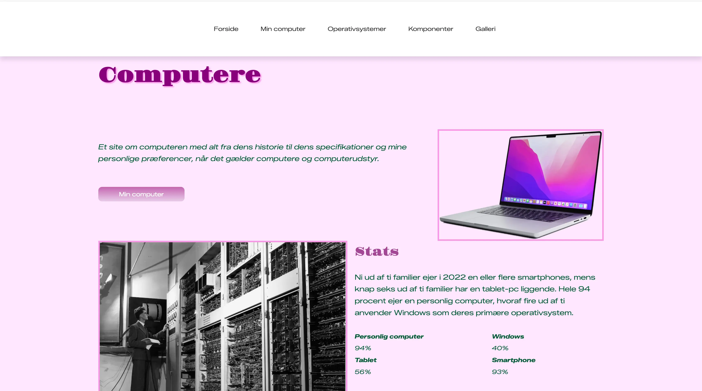
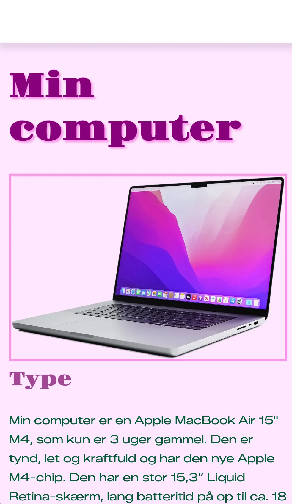
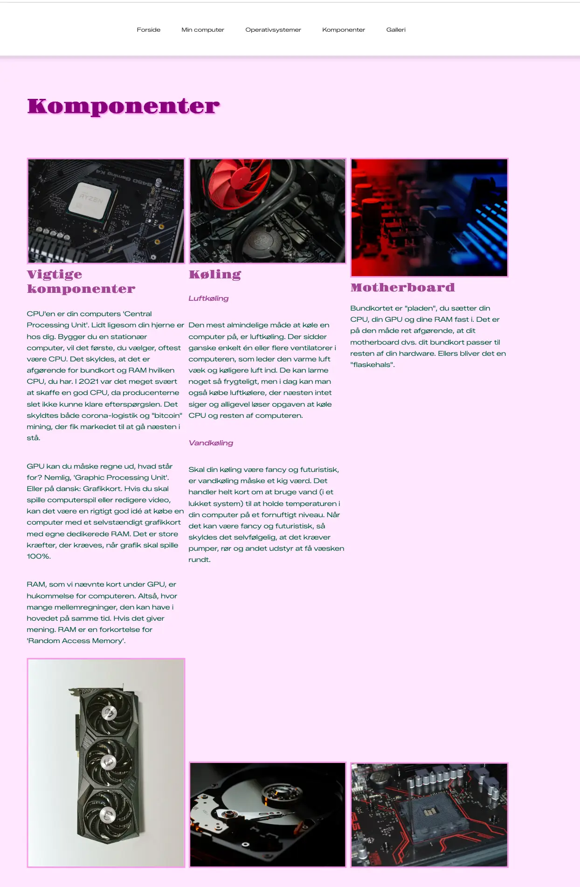

MOBILSITE
I tema 2 arbejdede jeg med grundlæggende HTML og CSS, hvor jeg lærte at opbygge et responsivt website med fokus på layout, navigation og brugeroplevelse.
Tema 2
Mobilsite
1. Løsning
Opgaven gik ud på at kode et website ud fra udleveret materiale samt en række krav og et eksempel på, hvordan det færdige website skulle se ud. Blandt andet skulle der indgå en menu, struktureret layout, en cta-knap, punktliste og at designet skulle være responsivt, alt sammen ved benyttelse af HTML og CSS.

2. Proces
Jeg arbejdede med at strukturere websiderne i HTML og style dem med CSS, så layout,
farver, billeder og typografi
passede til det ønskede design. Til layoutet brugte jeg grid til at opdele og placere
indholdet på siden på en
overskuelig måde.
Vi lærte også at opbygge en menu i HTML og style den med CSS ved hjælp af flex og
position: sticky, så menuen blev
liggende i toppen af siden under scrolling. Derudover lavede vi en punktliste ved hjælp
af grid. Ved at tilføje classes
til dl (description list) og div-elementerne i HTML kunne jeg bruge grid-row og
grid-column til at placere elementerne
præcist i layoutet.
Derudover arbejdede jeg med responsivt design ved hjælp af media queries, så websitet
kunne tilpasse sig forskellige
skærmstørrelser og fungere på både mobil og desktop.

3. Læring og refleksion
I tema 2 arbejdede jeg med grundlæggende webudvikling og fik en introduktion til de
vigtigste værktøjer og metoder inden
for frontend-design.
Derudover arbejdede jeg med designprincipper og lærte, hvordan visuelle elementer som
typografi, farver og opstilling
har stor betydning for brugeroplevelsen.
En vigtig del af projektet var at lære responsivt design. Jeg lærte at tilpasse websitet
til forskellige skærmstørrelser
som mobil, tablet og computer, så indholdet fungerede på alle enheder.
Projektet gav mig en forståelse for, hvordan man opbygger et website fra bunden ved
hjælp af HTML og CSS. Jeg lærte at
strukturere websider i HTML og bruge CSS til at style tekst, billeder, farver og layout,
så hjemmesiden blev mere
overskuelig og brugervenlig.

.webp)